Knock Control Sensor (2AZ-FE) Installation |
| 1. Install Knock Control Sensor |
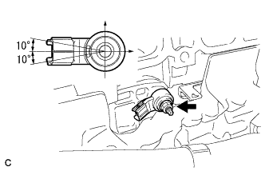 |
Install the knock control sensor with the nut.
Connect the knock control sensor connector.
| 2. Install Intake Manifold |
 |
Install a new gasket to the intake manifold.
 |
Install the intake manifold with the 5 bolts and 2 nuts.
Install the check valve to connector tube hose to the vacuum hose clamp. (*1)
| 3. Connect Ventilation Hose NO.2 |
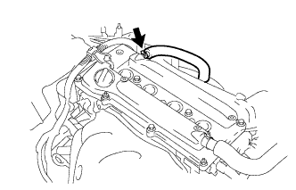 |
Connect the ventilation hose No.2 with the clamp.
| 4. Connect Check Valve to Connector Tube Hose |
 |
Connect the check valve to connector tube hose with the clamp.
| 5. Remove Fuel Injector Assembly |
Install a new insulator to the injector.
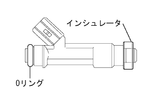 |
Apply gasoline to a new O-ring and install it to the injector.
Apply gasoline to the injector installation hole of the fuel delivery pipe.
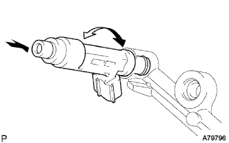 |
While turning the fuel injector left and right, install it to the fuel delivery pipe.
| 6. Install Fuel Delivery Pipe w/ Injector |
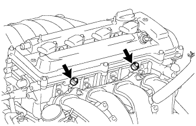 |
Set the 2 spacers on the cylinder head.
Install the fuel delivery pipe w/ injector to the cylinder head.
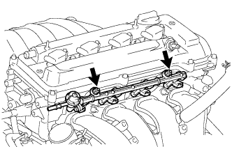 |
Temporarily tighten the 2 bolts.
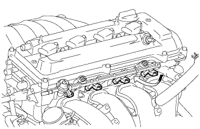 |
Turn the fuel injectors left and right by hand to check that they are installed without excessive force.
Position the fuel injector connectors toward the rear of the vehicle.
Tighten the 2 bolts.
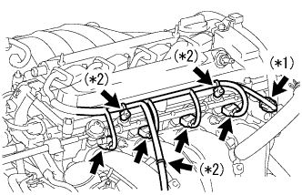 |
Install the 3 wire harness clamps. (*2)
Connect the 4 fuel injector connectors.
Connect the oil control valve connector (*1).
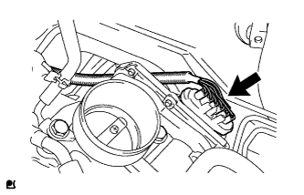 |
Connect the throttle body connector.
| 7. Connect Oxygen Sensor |
 |
Connect the oxygen sensor connector and clamp.
| 8. Connect Fuel Tube Sub-assembly |
Align the axes of the fuel pressure pulsation damper pipe and the fuel tube connector, and push in the fuel tube securely until it clicks (see ).
 |
Install EFI fuel pipe clamp No.2.
| 9. Install Throttle Body Assembly |
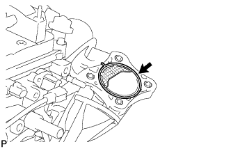 |
Install a new gasket to the intake manifold.
 |
Temporarily install the throttle body assembly, and connect the water bypass hose, water bypass hose No.2, throttle body hose and purge line hose to the throttle body assembly.
 |
Install the throttle body assembly with the 4 bolts.
Connect the throttle body connector.
| 10. Install Air Cleaner Cap w/ Air Hose |
Install the hinge portion first, then install the air cleaner cap with the 3 clamps.
 |
Install air cleaner hose No.1 to the throttle body assembly and release the lock of air cleaner hose clamp No.1.
 |
Connect the clamp and intake air flow meter connector.
 |
Connect the fuel vapor feed hose and fuel vapor feed hose No.2 to vacuum switching valve assembly No.1.
Connect the clamp and vacuum switching valve connector.
Connect the ventilation hose.
| 11. Add Coolant (Toyota Genuine Super Long Life Coolant) |
Close the radiator drain cock plug.
Close the cylinder block drain cock plug.
 |
Fill coolant of the specified concentration up to the B line of the radiator reserve tank.
After installing the reservoir tank cap, warm up the engine until the thermostat opens. (A)
After warm-up, repeat the cycle of 3000rpm engine speed for 5 seconds ←→ idling for 45 seconds 8 times or more (7 minutes or more). (B)
Stop the engine and wait until the coolant cools down, and if the level is below LOW, add coolant of the specified concentration through the filler again and adjust it to between FULL and LOW. (C)
Repeat steps (A) to (C) until the coolant level in the radiator reservoir tank stops dropping.
When the level stops dropping, add coolant of the specified concentration through the filler again to adjust the coolant level in the radiator reservoir tank to between FULL and LOW.
| 12. Connect Battery Negative Terminal |
| 13. Inspect for Coolant Leaks |
| 14. Inspect for Fuel Leaks |
| 15. Install Engine Cover Sub-assembly NO.1 |
 |
Install the engine cover assembly No.1 with the 2 nuts.
| 16. Install Cowl Top Panel Outer |
 |
Install the cowl top panel outer with the 8 bolts.
 |
Bend the heater air duct splash shield seal No.2 and water guard plate RH as shown in the illustration, and engage each clamp.
 |
Engage the windshield deicer wire harness connector and 3 clamps, and attach them to the cowl top panel outer. (w/ Cold Area Specification)
| 17. Install Cowl Body Mounting Reinforcement RH |
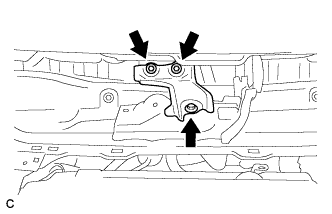 |
Install the cowl body mounting reinforcement RH to the cowl top panel outer with the 3 bolts.
| 18. Install Windshield Wiper Motor & Link Assembly |
 |
Install the windshield wiper motor & link assembly with the 2 bolts.
Connect the connector.
| 19. Install Cowl Top Ventilator Louver RH |
 |
Engage the 5 claws and install the cowl top ventilator louver RH as shown in the illustration.
| 20. Install Front Side Panel Protector NO.1 RH |
 |
Engage the pin and install the front side panel protector NO.1 RH.
| 21. Install Cowl Top Ventilator Louver LH |
 |
Engage the 11 claws and install the cowl top ventilator louver LH as shown in the illustration.
| 22. Install Front Side Panel Protector NO.1 LH |
 |
Engage the pin and install the front side panel protector NO.1 LH.
| 23. Install Hood to Cowl Top Seal |
 |
Engage the 7 clips and install the hood to cowl top seal.
| 24. Install Front Wiper Arm & Blade Assembly LH |
 |
Stop the windshield wiper motor assembly at the automatic stop position.
Using a round file or equivalent, clean the wiper arm serrations. (When reassembling)
Using a wire brush, clean the wiper pivot serrations.
 |
Install the front wiper arm & blade assembly LH with the front wiper arm nut so that it is in the position shown in the illustration.
| 25. Install Front Wiper Arm & Blade Assembly RH |
 |
Using a round file or equivalent, clean the wiper arm serrations. (When reassembling)
Using a wire brush, clean the wiper pivot serrations.
 |
Install the front wiper arm & blade assembly RH with the front wiper arm nut so that it is in the position shown in the illustration.
Operate the front wipers while spraying water or washer fluid on the glass, and check the wiping condition of the blades and that they do not interfere with the body.
| 26. Install Front Wiper Arm Head Cap |
 |
Install the 2 front wiper arm head caps.
| 27. Setting Procedure When Disconnecting/Reconnecting Battery Terminal |
Reference